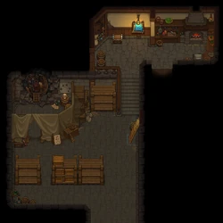
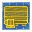

Talking Skull Cellar
| This article is a stub. You can help Graveyard Keeper Wiki by expanding it. |
| Talking Skull Cellar | |
|---|---|
 | |
Location information
| |
Buildable
|
True |
Exits
|
Village, Sweet Home (underground), Talking Skull |
Npcs
| |
| Gerry | |

The Talking Skull Cellar (unlocked with the Stranger Sins DLC) is located east of the village and below the Talking Skull tavern. The Professional Oven and Professional Kitchen are located here, both of which are used to create food to sell during Tavern Events
Trunk
The Talking Skull Cellar comes already furnished with one trunk. It is not possible to build any additional trunks. It located next to the Professional Oven and Professional Kitchen and can be used to store items to create food. Both the kitchen and the oven can draw items from the trunk.
Box Rack
A special storage that holds 6 items only. The box rack's main purpose is to store drinks to sell in the Talking Skull. Any alcoholic drinks stored here will be sold automatically though the tavern above. Proceeds for the drinks will be located in the chest sitting on the bar next to Barman. You can also store other items on the shelf like in the trunk. Both the kitchen and the oven can draw items from the box racks. Any food stored in the box racks will not be sold during Tavern Events.
| Icon | Materials Required |
|---|---|
 |
4× Wooden beam |

| |||||